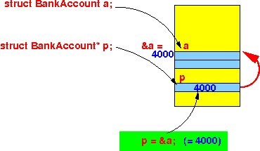

- You can define
a reference (= pointer)
to any data type,
including to
user-defined type (= struct)
Previously, we disccussed user-defined data type (= struct) on this webpage: click here
For review, here is an example program on how to define and use a struct typed variable:
#include <stdio.h> /* ------------------------ Structure definition ------------------------ */ struct BankAccount { int accNum; double balance; }; struct BankAccount a; // Global variable int main(int argc, char *argv[]) { struct BankAccount b; // Local variable a.accNum = 123; // Access member fields a.balance = 1000.0; b.accNum = 444; b.balance = 3000.0; printf("a.accNum = %d a.balance = %f\n", a.accNum, a.balance); printf("b.accNum = %d b.balance = %f\n", b.accNum, b.balance); }
- Pointer variable to
a user-defined type (= struct):
- You can define a
reference (= pointer) variable
to a
user-defined type (= struct)
as follows:
struct BankAccount *p; // Defines variable p as a pointer to // any struct BankAccount variable
- You can make p
point to the
BankAccount object a
using this
assignment:
struct BankAccount a; p = &a; // &a = address of the BankAccount object a // p points to a // The expression *p is now an alias for aThis diagram depicts what happens inside the variables after the assignment p = &a (assuming that the object a was stored at address 4000 in memory):

- You can define a
reference (= pointer) variable
to a
user-defined type (= struct)
as follows:
- This program shows
you how to
define and use
a reference variable
of the user-defined type
BankAccount:
#include <stdio.h> /* ------------------------ Structure definition ------------------------ */ struct BankAccount { int accNum; double balance; }; struct BankAccount a; int main(int argc, char *argv[]) { struct BankAccount b; struct BankAccount *p; // Reference variable to type "struct BankAccount" p = &a; // Now: *p is alias for a (*p).accNum = 123; // This statement is equal to: a.accNum = 123; (*p).balance = 1000.0; // This statement is equal to: a.balance = 1000.0; p = &b; // Now: *p is alias for b (*p).accNum = 444; // This statement is equal to: b.accNum = 444; (*p).balance = 9999.0; // This statement is equal to: b.balance = 9999.0; printf("a.accNum = %d a.balance = %f\n", a.accNum, a.balance); printf("b.accNum = %d b.balance = %f\n", b.accNum, b.balance); }Output:
cs255-1@aruba (5584)> a.out a.accNum = 123 a.balance = 1000.000000 b.accNum = 444 b.balance = 9999.000000
Important note:
- We must use
(*p).accNumbecause the member selection operator "." has a higher precedence (= priority) that the deference operator "*"
See the operator precedence table: click here
- In other words:
*p.accNum is processed as: *( p.accNum )which is wrong because p is not a BankAccount typed variable
(In order to write p.accNum as a correct C language expression, the variable p must have the type: struct BankAccount.
The variable p has the type: struct BankAccount * !!!)
- We must use
- Example Program:
(Demo above code)

- Prog file: /home/cs255001/demo/C/set2/ref-struct1.c
How to run the program:
- To compile: gcc ref-struct1.c
- To run: ./a.out